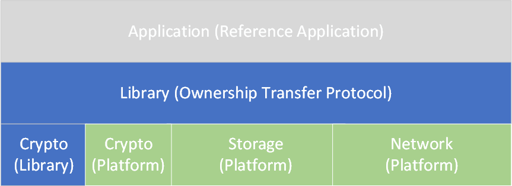

Porting Guide
Porting Guide¶
This document provides a guide to porting the Client SDK to new platforms.
Solution Architecture¶

The Client SDK reference solution is comprised of 3 layers:
- Application: The reference application which triggers the Device Initialization and Ownership Transfer State Machine.
- Library: The Device Initialization and Ownership Transfer Protocol implementation for Secure Device Onboarding.
- Platform: Platform-specific implementation.
The Platform layer is itself comprised of three modules: Crypto, Network, and Storage:
-
Crypto: Implementation of Cryptographic requirements of Ownership Transfer Protocol. This also abstracts the Platform specific crypto methods from the Library. So, the crypto implementation is divided into:
- Library: specific implementation: There is no impact of adding new platform
- Platform: Specific implementation: The impact of adding new platform is detailed in Crypto Subsystem API section below.
-
Network: Implementation of Networking. This abstracts the Platform specific networking functionality from Library. The impact of adding new platform is detailed in the Network Subsystem API section below.
- Storage: Implementation of Secure Storage. This abstracts the Platform specific storage methods from Library. The impact of adding new platform is detailed in the Storage Subsystem API section below.
Code Structure¶
The Client SDK reference implementation source code is organized as follows (folders that are discussed in this porting guide are indicated with "*"):
app - - - - - - Reference Application
crypto* - - - - Crypto Subsystem
cmake* - - - - - cmake sub files
data - - - - - - Filesystem place to store blob like keys, network info.
device_modules - Service Info Modules
docs - - - - - - Documents
include - - - - Client SDK APIs
lib - - - - - - The core protocol implementation
mbedos - - - - - mbedos based Client SDK implementation
network* - - - - Network subsystem
NOTICES - - - - License specific information
storage* - - - - Storage Subsystem
utils - - - - - Reference files for setting up TPM, flashing etc.
Build System¶
Starting with release v1.9.0 of the Client SDK, the build system uses cmake. This section explains the most prominent configurations in build system. The reference application is tightly coupled with the build system, storage and crypto APIs. The intent of this section is to cover those specific bindings to make the solution easy to traverse.
app
CMakeLists.txt
cmake
blob_path.cmake
cli_input.cmake
extension.cmake
pristine.cmake
CMakeLists.txt
crypto
CMakeLists.txt
device_modules
CMakeLists.txt
lib
CMakeLists.txt
mbedos
CMakeLists.txt
network
CMakeLists.txt
storage
CMakeLists.txt
cli_input.cmake (erstwhile base.mk)¶
The base.mk was used to define the build flags as a top-level configuration Makefile. The cli_input.cmake still retains that property, however, the blob specific configuration is moved to blob_path.cmake.
The following specifies the default build configuration which can be overridden in invocation of cmake.
set (TARGET_OS linux)
set (CSTD c99)
set (TLS openssl)
set (DA ecdsa256)
set (PK_ENC ecdsa)
set (KEX ecdh)
set (AES_MODE ctr)
set (EPID epid_r6)
set (BUILD debug)
set (TARGET_OS linux)
set (HTTPPROXY true)
set (PROXY_DISCOVERY false)
set (OPTIMIZE 1)
set (MODULES false)
set (DA_FILE der)
set (CRYPTO_HW false)
set (ARCH x86)
set (RETRY true)
set (unit-test false)
set (MANUFACTURER_TOOLKIT true)
set (STORAGE true)
set (BOARD NUCLEO_F767ZI)
set (BLOB_PATH .)
set (TPM2_TCTI_TYPE tabrmd)
set (RESALE false)
set (REUSE true)
blob_path.cmake¶
The blob specific paths are set with this cmake file. A new variable BLOB_PATH is introduced to customize the placement of blobs in the filesystem.
client_sdk_compile_definitions(
-DSERIAL_FILE=\"${BLOB_PATH}/data/manufacturer_sn.bin\"
-DMODEL_FILE=\"${BLOB_PATH}/data/manufacturer_mod.bin\"
-DPLATFORM_IV=\"${BLOB_PATH}/data/platform_iv.bin\"
-DPLATFORM_HMAC_KEY=\"${BLOB_PATH}/data/platform_hmac_key.bin\"
-DPLATFORM_AES_KEY=\"${BLOB_PATH}/data/platform_aes_key.bin\"
-DEPID_PRIVKEY=\"${BLOB_PATH}/data/epidprivkey.dat\"
-DSDO_CRED=\"${BLOB_PATH}/data/PMDeviceCredentials.bin\"
-DMANUFACTURER_IP=\"${BLOB_PATH}/data/manufacturer_ip.bin\"
-DMANUFACTURER_DN=\"${BLOB_PATH}/data/manufacturer_dn.bin\"
-DMANUFACTURER_PORT=\"${BLOB_PATH}/data/manufacturer_port.bin\"
)
client_sdk_compile_definitions(
-DSDO_CACERT=\"${BLOB_PATH}/data/cacert.bin\"
-DSDO_PUBKEY=\"${BLOB_PATH}/data/pubkey.dat\"
-DSDO_SIGRL=\"${BLOB_PATH}/data/sigrl.dat\"
-DSDO_CRED_SECURE=\"${BLOB_PATH}/data/Secure.blob\"
-DSDO_CRED_MFG=\"${BLOB_PATH}/data/Mfg.blob\"
-DSDO_CRED_NORMAL=\"${BLOB_PATH}/data/Normal.blob\"
)
SDO_CRED_NORMAL - Normal.blob¶
The Client SDK or Device lifecycle is maintained in this blob. This data is stored as Authenticated Data meaning that HMAC256 is calculated over this data and stored back.
Note
This is part of custom storage implementation in reference solution. Please refer Storage Subsystem API for details required for implementation on custom platform. The Application may use APIs listed in Storage Subsystem API, to manipulate blobs, so, the blobs remain consistent as expected by Client SDK. However, the APIs mentioned in the above said section are internal APIs and it is up to the application developer to reuse them.
The application, before starting the state machine by calling sdo_sdk_init() generates the HMAC over this data and stores it back along with the data.
This is initialized to the following value to indicate that the device is in manufactured state. It also allows the reference application to perform multiple cycles of Secure Device Onboard operation.
blob_path.cmake:
file(WRITE ${BLOB_PATH}/data/Normal.blob "{\"ST\":1}")
PLATFORM_(IV/HMAC_KEY/AES_KEY)¶
The purpose of these defines is to specify the location where the reference solution stores the following information:
- PLATFORM_IV: Initialization Vector used in Authenticated Encryption of Secure Blobs. The Secure Blobs are internal to Client SDK and are not controlled by the application.
- PLATFORM_HMAC_KEY: HMAC key to authenticate Normal.blob or any other internal blob which only needs Authenticated read.
- PLATFORM_AES_KEY: AES key to Authenticate Encrypt the Secure Blobs. The Secure Blobs are internal to Client SDK and are not controlled by the application.
Note
These flags are not necessary for the platforms which have their own Secure Storage mechanisms. The platform may be able to store all blobs using Authenticated Encryption including Normal.blob. Client SDK always uses sdo_blob_read() to read the data, so, the underlying detail is already abstracted. In the reference solution, it is expected that these files exist physically although without any content. The content gets generated on an as-needed basis.
MANUFACTURER_(IP/DN/PORT)¶
Client SDK uses the location defined by the below flags to connect to Manufacturer Server to perform Device Initialization.
- MANUFACTURER_IP: This is the manufacturer IP address to be used for performing Device Initialization.
- MANUFACTURER_DN: This is the manufacturer Domain Name used to resolve to the IP address. This is used if the MANUFACTURER_IP is not given.
- MANUFACTURER_PORT: This is the manufacturer server port, where the Device Initialization protocol is waiting for the device. By default, the port is 8039 if this blob is not created, otherwise, the port is used from this blob.
ECDSA_PRIVKEY¶
This define specifies the ECDSA private key to be used as a device identity. Two options are possible:
- The key could be pre-created like the reference application.
- If the device supports secure storage, then the key can be generated within the device and stored using secure storage APIs
Note
This section is not a recommendation, but specifies some of the possibilities that exist.
SDO_CRED_(SECURE/MFG)¶
These defines are used internally by Client SDK:
- SDO_CRED_SECURE: This define specifies the location of the device secret. This blob is Authenticated Encrypted in the reference solution.
- SDO_CRED_MFG: This define specifies the location of Manufacturer data. This blob is stored with Authenticated information.
extension.cmake (erstwhile crypto.conf)¶
This cmake file consists mostly of build configuration from crypto.conf but is not limited to it.
Supported Configurations¶
The following content is retained from crypto.conf for readability.
### KEX (key exchange) validation
SUPPORTED_KEX = dh asym ecdh ecdh384 none
### Device Attestation validation
SUPPORTED_DA = ecdsa256 ecdsa384 tpm20_ecdsa256
### Public Key Encoding
SUPPORTED_PK_ENC = rsa ecdsa
### AES mode for secure channel
SUPPORTED_AES_MODE = cbc ctr
-
SUPPORTED_KEX: This specifies the key exchange algorithms implemented to create a secure channel between Device and Owner in Ownership Transfer Protocol.
- dh: Diffie Hellman
- asym: Asymmetric (based on RSA)
- ecdhxxx: Based on Elliptic Curve Diffie Hellman
-
SUPPORTED_DA: This specifies the supported Device Attestation algorithms which device uses to prove its identity to Rendezvous Server and Owner.
Note
tpm20_ecdsa256 isnt a separate algorithm, it uses ecdsa256 as Device Attestation, but uses TPM2.0 to generate keys and store data
-
SUPPORTED_PK_ENC: This specifies the Public Key Encoding which Device supports to authenticate the Owner
-
SUPPORTED_AES_MODE: This specifies the AES mode of encryption supported by device. The device supports CBC and CTR.
Auto Configuration¶
A selection of higher crypto for Device Attestation automatically configures Key Exchange to use higher crypto.
elseif(DA MATCHES ecdsa384)
client_sdk_compile_definitions(
-DECDSA384_DA)
#Move KEX to higher crypto
if (NOT(${KEX} STREQUAL ecdh384))
set(KEX ecdh384)
message("KEX moved to higher crypto")
endif()
Client SDK Constants¶
sdo_sdk_error¶
typedef enum {
SDO_RV_TIMEOUT = 1,
SDO_CONN_TIMEOUT,
SDO_DI_ERROR,
SDO_TO1_ERROR,
SDO_TO2_ERROR
} sdo_sdk_error;
The usage of this enum is detailed in sdo_sdk_init()
sdo_sdk_status¶
typedef enum {
SDO_SUCCESS,
SDO_INVALID_PATH,
SDO_CONFIG_NOT_FOUND,
SDO_INVALID_STATE,
SDO_RESALE_NOT_SUPPORTED,
SDO_RESALE_NOT_READY,
SDO_WARNING,
SDO_ERROR,
SDO_ABORT
} sdo_sdk_status;
The usage of this enum is detailed in sdo_sdk_init()
sdo_sdk_device_state¶
typedef enum {
SDO_STATE_PRE_DI = 2,
SDO_STATE_PRE_TO1,
SDO_STATE_IDLE,
SDO_STATE_RESALE,
SDO_STATE_ERROR
} sdo_sdk_device_state;
The usage of this enum is detailed in sdo_sdk_get_status()
Client SDK Functions¶
The application resides in the app directory of the reference solution. The application uses the APIs specified in include/sdo.h to trigger the Ownership transfer state machine. The following lists the APIs which the application uses to perform Device Initialization or start Ownership Transfer Protocol.
sdo_sdk_init()¶
sdo_sdk_status sdo_sdk_init(sdo_sdk_errorCB error_handling_callback,
uint32_t num_modules,
sdo_sdk_service_info_module *module_information);
typedef int (*sdo_sdk_errorCB)(sdo_sdk_status type, sdo_sdk_error error_code);
Description
This function initializes the Client SDK data structures. It allows the application to control the error handling of the Client SDK state machine by setting error_handling_callback. Client SDK calls error_handling_callback to propagate the error_code(sdo_sdk_error) back to the application with Client SDK internal status sdo_sdk_status(sdo_sdk_status). The application may handle the error and return the appropriate action to be taken by Client SDK further.
Note
The reference application allows the Client SDK to retry for 5 times before calling abort
The Client SDK allows the owner to download the required Device Management System agents via Service Info mechanism; the num_modules and module_information registers the Service Info modules with the Client SDK.
Parameters
error_handling_callback: It is of type sdo_sdk_errorCB
num_modules: number of Service Info modules to register.
module_information: Array of Service Info modules registration information
Return Value
SDO_SUCCESS for success.
Greater than SDO_SUCCESS for failure (refer sdo_sdk_status)
sdo_sdk_run()¶
sdo_sdk_status sdo_sdk_run(void);
Description
This function triggers either the Device Initialize state machine or Ownership Transfer Protocol state machine depending on the device status stored in Normal.blob.
Note
The reference application first successful executions performs Device Initialization. The second execution begins to perform Ownership Transfer Protocol.
Parameters
None
Return Value
SDO_SUCCESS for success.
Greater than SDO_SUCCESS for failure (refer sdo_sdk_status)
sdo_sdk_resale()¶
sdo_sdk_status sdo_sdk_resale(void);
Description
This function triggers the device resale.
Parameters
None
Return Value
SDO_SUCCESS for success.
Greater than SDO_SUCCESS for failure (refer sdo_sdk_status)
sdo_sdk_get_status()¶
sdo_sdk_device_state sdo_sdk_get_status(void);
Description
This function returns the current state of the device.
Parameters
None
Return Value
Please refer sdo_sdk_status:
SDO_STATE_PRE_DI: Device is ready for DI
SDO_STATE_PRE_TO1: Device is ready for Ownership transfer
SDO_STATE_IDLE: Device's ownership transfer done
SDO_STATE_RESALE: Device is ready for ownership transfer
SDO_STATE_ERROR: Error in getting device status
Crypto Subsystem API¶
Cryptography support is a platform offering which enables Client SDK to generate random number, perform encryption, signing, sign verification and so on. The required functionality by the Client SDK is abstracted via a set of APIs declared in file "crypto/include/sdoCryptoHal.h" and "crypto/include/base64.h"
Note
This section of the document specifies the internal APIs to abstract Crypto implementation from Client SDK and are subject to change.
Constants¶
SDO_CRYPTO_HASH_TYPE¶
#define SDO_CRYPTO_HASH_TYPE_NONE 0
#define SDO_CRYPTO_HASH_TYPE_SHA_1 3
#define SDO_CRYPTO_HASH_TYPE_SHA_256 8
#define SDO_CRYPTO_HASH_TYPE_SHA_384 14
#define SDO_CRYPTO_HASH_TYPE_SHA_512 10
The usage of this define is detailed in crypto_hal_hash().
SDO_CRYPTO_HMAC_TYPE¶
#define SDO_CRYPTO_HMAC_TYPE_SHA_256 108
#define SDO_CRYPTO_HMAC_TYPE_SHA_384 114
#define SDO_CRYPTO_HMAC_TYPE_SHA_512 110
The usage of this define is detailed in crypto_hal_hmac().
SDO_CRYPTO_PUB_KEY_ENCODING¶
#define SDO_CRYPTO_PUB_KEY_ENCODING_NONE 0
#define SDO_CRYPTO_PUB_KEY_ENCODING_X509 1
#define SDO_CRYPTO_PUB_KEY_ENCODING_RSA_MOD_EXP 3
#define SDO_CRYPTO_PUB_KEY_ENCODING_EPID 4
The usage of this define is detailed in crypto_hal_sig_verify().
SDO_CRYPTO_PUB_KEY_ALGO¶
#define SDO_CRYPTO_PUB_KEY_ALGO_NONE 0
#define SDO_CRYPTO_PUB_KEY_ALGO_RSA 1
#define SDO_CRYPTO_PUB_KEY_ALGO_DH 2
#define SDO_CRYPTO_PUB_KEY_ALGO_DSA 3
#define SDO_CRYPTO_PUB_KEY_ALGO_ECDSAp256 13
#define SDO_CRYPTO_PUB_KEY_ALGO_ECDSAp384 14
#define SDO_CRYPTO_PUB_KEY_ALGO_EPID_1_1 91
#define SDO_CRYPTO_PUB_KEY_ALGO_EPID_2_0 92
The usage of this define is detailed in crypto_hal_sig_verify().
SDO_PK_HASH¶
#define SDO_PK_HASH_NONE 0
#define SDO_PK_HASH_SHA1 3
#define SDO_PK_HASH_SHA256 8
#define SDO_PK_HASH_SHA512 10
#define SDO_PK_HASH_SHA384 14
The usage of this define is detailed in crypto_hal_rsa_encrypt().
Structures¶
sdo_byte_array_t¶
typedef struct {
size_t byte_sz;
uint8_t * bytes;
} sdo_bits_t;
typedef sdo_bits_t sdo_byte_array_t;
The usage is detailed in crypto_hal_get_device_csr().
Initialization and Exit Functions¶
crypto_init()¶
int32_t crypto_init(void)
Description
This function initializes and enables the crypto services to be used by Client SDK.
Note
This function may require a change in implementation for porting to a custom platform. For guidance in assessing the secure random number generation requirements for your device, refer to the Client SDK Security Implications document.
Parameters
None
Return Value
0 for success
-1 for failure
crypto_close()¶
int32_t crypto_close(void)
Description
This function tears down any initialization done to enable crypto services to Client SDK.
Note
This function may require a change in implementation for porting to custom platform, as it tears down the initialization done in crypto_init(). Also, the crypto tear down could be different for custom platforms.
Parameters
None
Return Value
0 for success
-1 for failure
Random Number Functions¶
random_init()¶
int random_init(void)
Description This function initializes the random number generator functionality.
Note
This function may require a change in implementation for porting to a custom platform. For guidance in assessing the secure random number generation requirements for your device, refer to the Client SDK Security Implications document.
Parameters
None
Return Value
0 for success
-1 for failure
random_close()¶
int random_close(void)
Description
This function releases the random number context. After this call, the random number cannot be retrieved from a call to crypto_hal_random_bytes()
Note
This function may require a change in implementation for porting to custom platform, as it tears down the initialization done to setup random number generator which may be different in custom platform
Parameters
None
Return Value
0 for success
-1 for failure
crypto_hal_random_bytes()¶
int32_t crypto_hal_random_bytes(uint8_t *random_buffer, size_t num_bytes)
Description
This function fills the random_buffer with random number of size num_bytes.
Note
This function may not require a change in implementation for porting to custom platform, as the reference implementation uses standard mbedTLS/openSSL APIs
Parameters
random_buffer: pointer to memory to receive random number
num_bytes: size of memory pointed by random_buffer indicating the bytes of random number requested.
Return Value
0 for success
-1 for failure
Message Digest and MAC Functions¶
crypto_hal_hash()¶
int32_t crypto_hal_hash(uint8_t hash_type, const uint8_t *buffer,
size_t buffer_length, uint8_t *output,
size_t output_length)
Description
This function hashes the contents of the memory pointed to by buffer of size buffer_length with hash_type algorithm and fills the memory pointed to by output of size output_length with generated hash.
Note
This function may not require a change in implementation for porting to custom platform, as the reference implementation uses standard mbedTLS/openSSL APIs
Parameters
hash_type: This function must support all the hash algorithms identifiers mentioned in SDO_CRYPTO_HASH_TYPE except SDO_CRYPTO_HASH_TYPE_SHA_512 (optional). Client SDK uses SDO_CRYPTO_HASH_TYPE_USED to decide at compile time which hash_type to use - either SDO_CRYPTO_HASH_TYPE_SHA_256 or SDO_CRYPTO_HASH_TYPE_SHA_384.
buffer: a valid pointer to a memory containing data to be hashed
buffer_length: size of memory pointed to by buffer
output: a valid pointer to a memory which will be filled by hash
output_length: size of the memory pointed to by output. It must be able to contain the generated Hash.
Return Value
0 for success
-1 for failure
crypto_hal_hmac()¶
int32_t crypto_hal_hmac(uint8_t hmac_type, const uint8_t *buffer,
size_t buffer_length, uint8_t *output,
size_t output_length, const uint8_t *key,
size_t key_length)
Description
This function HMACs the contents of the memory pointed to by buffer of size buffer_length using key of size key_length, with hmac_type algorithm and fills the memory pointed to by output of size output_length with generated HMAC.
Note
This function may not require a change in implementation for porting to custom platform, as the reference implementation uses standard mbedTLS/openSSL APIs
Parameters
hmac_type: This function must support all the HMAC algorithms identifiers mentioned in SDO_CRYPTO_HMAC_TYPE except SDO_CRYPTO_HMAC_TYPE_SHA_512 (optional). Client SDK uses SDO_CRYPTO_HMAC_TYPE_USED to decide at compile time which hmac_type to use - either SDO_CRYPTO_HMAC_TYPE_SHA_256 or SDO_CRYPTO_HMAC_TYPE_SHA_384.
buffer: a valid pointer to a memory containing data to be HMACed.
buffer_length: size of memory pointed to by buffer
output: a valid pointer to a memory which will be filled by HMACed data.
output_length: size of the memory pointed to by output. It must be able to contain the generated HMAC.
Return Value
0 for success
-1 for failure
Asymmetric Functions¶
crypto_hal_sig_verify()¶
int32_t crypto_hal_sig_verify(uint8_t key_encoding, uint8_t key_algorithm,
const uint8_t *message, uint32_t message_length,
const uint8_t *message_signature,
uint32_t signature_length,
const uint8_t *key_param1,
uint32_t key_param1Length,
const uint8_t *key_param2,
uint32_t key_param2Length)
Description
This function verifies the ECDSA or RSA signature pointed by message_signature of size message_length on the data pointed by message of size message_length with the key material key_param1 and key_param2 interpreted according to key_encoding.
Note
This function may not require a change in implementation for porting to custom platform, as the reference implementation uses standard mbedTLS/openSSL APIs
Parameters
key_encoding: SDO_CRYPTO_PUB_KEY_ENCODING_X509 encoding is used for ECDSA and SDO_CRYPTO_PUB_KEY_ENCODING_RSA_MOD_EXP is used for RSA. Please refer SDO_CRYPTO_PUB_KEY_ENCODING
key_algorithm: SDO_CRYPTO_PUB_KEY_ALGO_(ECDSAp256/ECDSAp384) is used for ECDSA and SDO_CRYPTO_PUB_KEY_ALGO_RSA for RSA. Please refer SDO_CRYPTO_PUB_KEY_ALGO
message: data over which the sign verification needs to be performed.
message_length: size of the message
message_signature: signature over the message sent by the signing entity
signature_length: size of the message_signature
key_param1: either ECDSA key or RSA Modulus
key_param1Length: size of the key in key_param1
key_param2: NULL for ECDSA or Public Exponent for RSA
key_param2Length: size of the key in key_param2
Return Value
0 for success
-1 for failure
crypto_hal_ecdsa_sign()¶
int32_t crypto_hal_ecdsa_sign(const uint8_t *message, size_t message_len,
unsigned char *signature, size_t *signature_len)
Description
This function signs the message of size message_len and fills the signed data in signature of size signature_len.
- Algorithm is based on the compile time flags ECDSA256_DA and ECDSA384_DA.
- Signing Key is loaded from filesystem stored at location ECDSA_PRIVKEY.
- Signature Length is allocated by Client SDK based on internal define ECDSA_SIGNATURE_MAX_LEN.
Note
This function may not require a change in implementation for porting to custom platform, as the reference implementation uses standard mbedTLS/openSSL APIs
Parameters
message: The message over which sign is to be calculated.
message_length: size of the message
signature: The buffer to fill signature with.
signature_len: size of the signature
Return Value
0 for success
-1 for failure
crypto_hal_rsa_encrypt()¶
int32_t crypto_hal_rsa_encrypt(uint8_t hash_type, uint8_t key_encoding,
uint8_t key_algorithm, const uint8_t *clear_text,
uint32_t clear_text_length, uint8_t *cipher_text,
uint32_t cipher_text_length,
const uint8_t *key_param1,
uint32_t key_param1Length,
const uint8_t *key_param2,
uint32_t key_param2Length)
Description
This function encrypts the clear_text of size clear_text_length with the RSA algorithm using key material key_param1 and key_param2.
Note
This function may not require a change in implementation for porting to custom platform, as the reference implementation uses standard mbedTLS/openSSL APIs
Parameters
hash_type: mandatory support required for SDO_PK_HASH_SHA256. Please refer SDO_PK_HASH
key_encoding: SDO_CRYPTO_PUB_KEY_ENCODING_RSA_MOD_EXP. Please refer SDO_CRYPTO_PUB_KEY_ENCODING
key_algorithm: SDO_CRYPTO_PUB_KEY_ALGO_RSA. Please refer SDO_CRYPTO_PUB_KEY_ALGO
clear_text: pointer to the text to be encrypted
clear_text_length: size of the clear_text
cipher_text: pointer to the empty buffer to be filled after encrypting clear_text
cipher_text_length: size of buffer pointed by cipher_text. Please refer the Return value section of this function or crypto_hal_rsa_len()
key_param1: RSA Modulus
key_param1Length: size of RSA Modulus
key_param2: Public Exponent for RSA
key_param2Length: size of Public Exponent for RSA
Return Value
0 for success
-1 for failure
crypto_hal_rsa_len()¶
uint32_t crypto_hal_rsa_len(const uint8_t *key_param1,
uint32_t key_param1Length,
const uint8_t *key_param2,
uint32_t key_param2Length)
Description
This function returns the size of encrypted text using RSA algorithm which uses the key material key_param1 and key_param2.
Note
This function may not require a change in implementation for porting to custom platform, as the reference implementation uses standard mbedTLS/openSSL APIs
Parameters
key_param1: RSA Modulus
key_param1Length: size of RSA Modulus
key_param2: Public Exponent for RSA
key_param2Length: size of Public Exponent for RSA
Return Value
0 for success
-1 for failure
Symmetric Cipher Functions¶
crypto_hal_aes_encrypt()¶
int32_t crypto_hal_aes_encrypt(const uint8_t *clear_text,
uint32_t clear_text_length, uint8_t *cipher_text,
uint32_t *cipher_length, size_t block_size,
const uint8_t *iv, const uint8_t *key,
uint32_t key_length)
Description
This function encrypts the clear_text of size clear_text_length with the AES algorithm using key of size key_length and fills the cipher_text with encrypted content of size cipher_length.
Note
This function may not require a change in implementation for porting to custom platform, as the reference implementation uses standard mbedTLS/openSSL APIs
Parameters
clear_text: pointer to the buffer containing text to be encrypted
clear_text_length: size of clear_text
cipher_text: pointer to the empty buffer to be filled after encrypting clear_text
cipher_length: size of buffer pointed by cipher_text. This is IN/OUT parameter and gets filled with size of expected encrypted buffer in case cipher_text is passed as NULL with all other parameters as valid.
block_size: is 16 in case of AES CBC encrypt
iv: Initialization Vector of size 16 bytes. Counter management is to be done by the caller for AES CTR mode.
key: AES symmetric key
key_length: size of the key
Return Value
0 for success
-1 for failure
crypto_hal_aes_decrypt()¶
int32_t crypto_hal_aes_decrypt(uint8_t *clear_text, uint32_t *clear_text_length,
const uint8_t *cipher_text,
uint32_t cipher_length, size_t block_size,
const uint8_t *iv, const uint8_t *key,
uint32_t key_length)
Description
This function decrypts the cipher_text of size cipher_length with the AES algorithm using key of size key_length and fills the clear_text with unencrypted content of length clear_text_length.
Note
This function may not require a change in implementation for porting to custom platform, as the reference implementation uses standard mbedTLS/openSSL APIs
Parameters
clear_text: pointer to the empty buffer to be filled with unencrypted text
clear_text_length: size of clear_text. This is IN/OUT parameter and gets filled with size of expected unencrypted buffer in case clear_text is passed as NULL with all other parameters as valid.
cipher_text: pointer to the buffer containing text to be decrypted.
cipher_length:size of cipher_text.block_size:is 16 in case of AES CBC encryptiv:Initialization Vector of size 16 bytes. Counter management is to be done by the caller for AES CTR mode.key:AES symmetric keykey_length:` size of the key
Return Value
0 for success
-1 for failure
Certificate Signing Request¶
crypto_hal_get_device_csr()¶
int32_t crypto_hal_get_device_csr(sdo_byte_array_t **csr);
Description
This function fills the Client SDK byte array csr with the Certificate Signing Request (CSR) data.
Note
This function may not require a change in implementation for porting to custom platform, as the reference implementation uses the standard mbedTLS/openSSL APIs
Parameters
csr: SDO byte array. Please refer sdo_byte_array_t. The usage of the structure is as below:
- byte_sz: size of the buffer in bytes pointed by bytes
- bytes: pointer to a stream of bytes
This array is allocated by using sdo_byte_array_alloc(size_of_buffer) function.
Return Value
0 for success
-1 for failure
Key Exchange Functions¶
crypto_hal_kex_init()¶
int32_t crypto_hal_kex_init(void **context)
Description
Client SDK uses DH, ECDH and Asym algorithms to perform key exchange for creating a secure channel between Device and Owner. The configurations are mentioned in Crypto Configuration. The Device is considered as entity B in Key Exchange and the Owner is considered as entity A.
DH: This function creates a Key Exchange context by generating a DH key pair. In the later part of Client SDK execution, the public part of the key pair is retrieved using crypto_hal_get_device_random() and sent to the owner for generating the shared secret.
ECDH: This function creates an ECDH key pair. It then appends a random number with the public part of the generated key pair to generate a stream of bytes known as Device Random as mentioned below.
ByteArray[blen(Qx), Qx, blen(Qy), Qy, blen(DeviceRandom), Random Number]
The random number as mentioned above is of size 16 bytes (ECDH256) or 48 bytes (ECDH384).
In the later part of Client SDK execution, this buffer is retrieved using crypto_hal_get_device_random() and sent to the owner for generating the shared secret.
ASYM: This function generates a random number of 32 bytes to be used later in the key exchange.
As part of Client SDK Ownership Transfer Protocol, the context gets filled in with Owner public key which is used to encrypt this random number. This key exchange is only valid if the owner certificate uses RSA algorithm. This encryption is abstracted with a set of APIs which dont directly call openssl/mbedTLS APIs. The buffer to be sent to owner is retrieved by calling crypto_hal_get_device_random().
Note
This function may not require a change in implementation for porting to custom platform, as the reference implementation uses standard mbedTLS/openSSL APIs
Parameters
context: a valid pointer to store the key exchange context.
Return Value
0 for success
-1 for failure
crypto_hal_kex_close()¶
int32_t crypto_hal_kex_close(void **context)
Description
This function tears down the key exchange context created by crypto_hal_kex_init().
Note
This function may not require a change in implementation for porting to custom platform, as the reference implementation uses standard mbedTLS/openSSL APIs
Parameters
context: a valid pointer of key exchange context.
Return Value
0 for success
-1 for failure
crypto_hal_get_device_random()¶
int32_t crypto_hal_get_device_random(void *context, uint8_t *dev_rand_value,
uint32_t *dev_rand_length)
Description
This function fills the buffer pointed to by dev_rand_value of size dev_rand_length with the Device Random Value. The Device Random value is generated differently for different algorithms.
DH: The public part of the key pair is the Device Random, which is generated in call to crypto_hal_kex_init().
ECDH: The buffer generated in crypto_hal_kex_init() is the Device Random.
ASYM: The buffer generated is abstracted out by Client SDK. The values are retrieved from key_ex_data->_publicB and key_ex_data->_publicB_length
Note
This function may not require a change in implementation for porting to custom platform, as the reference implementation uses standard mbedTLS/openSSL APIs or internal data structures which can be reused.
Parameters
context: a valid pointer of key exchange context.
dev_rand_value: A valid pointer to an empty buffer. If this parameter is passed as NULL, then this function returns the size of the Device Random in dev_rand_length.
dev_rand_length: The size of the buffer pointed by dev_rand_value.
Return Value
0 for success
-1 for failure
crypto_hal_set_peer_random()¶
int32_t crypto_hal_set_peer_random(void *context,
const uint8_t *peer_rand_value,
uint32_t peer_rand_length)
Description
This function updates the key exchange context with peer_rand_value of size peer_rand_length. This function uses this information to generate shared secret.
DH: This generates the key using the standard Diffie Hellman mechanism Ab mod p. A is the owner data.
ECDH: The Owner sends the data in a similar buffer layout as device sends it. Please see crypto_hal_kex_init() for the device Key Exchange buffer layout.
ByteArray[blen(Ax), Ax, blen(Ay), Ay, blen(OwnerRandom), OwnerRandom]
This function fills the point Qp with the Owner Information and generates an ECDH key pair. The shared secret is generated as:
Shx ||DeviceRandom||OwnerRandom
ASYM The shared secret is generated as:
DeviceRandom || OwnerRandom
Note
This function may not require a change in implementation for porting to custom platform, as the reference implementation uses standard mbedTLS/openSSL APIs
Parameters
context: a valid pointer of key exchange context.
peer_rand_value: a valid pointer to Owner data for generating shared secret.
peer_rand_length: The size of the buffer pointed by peer_rand_value.
Return Value
0 for success
-1 for failure
crypto_hal_get_secret()¶
int32_t crypto_hal_get_secret(void *context, uint8_t *secret,
uint32_t *secret_length)
Description
This function returns the shared secret created as part of key exchange protocol by crypto_hal_set_peer_random().
Note
This function may not require a change in implementation for porting to custom platform, as the reference implementation uses the internal structure members which gets filled in Key Exchange protocol.
Parameters
context: a valid pointer of key exchange context.
secret: A valid pointer to an empty buffer. If this parameter is passed as NULL, then this function returns the size of the secret in secret_length.
secret_length: The size of the buffer pointed by secret.
Return Value
0 for success
-1 for failure
Base64¶
Client SDK uses base64 to send and receive the data from the connected servers. The following set of APIs are declared in crypto/include/base64.h.
bin_toB64Length¶
int bin_toB64Length(int bin_length)
Description
This function returns the base64 length corresponding to non-encoded bin_length.
Note
This function may not require a change in implementation for porting to custom platform, as the reference implementation uses standard mbedTLS/openSSL APIs
Parameters
bin_length: the size of the data to be encoded in base64.
Return Value
Integer returning the base64 encoded length
b64To_bin_length¶
int b64To_bin_length(int b64Len);
Description
This function returns the decoded length corresponding to base64 encoded length identified by b64Len.
Note
This function may not require a change in implementation for porting to custom platform, as the reference implementation uses standard mbedTLS/openSSL APIs
Parameters
b64Len: the size of the data to be decoded from base64.
Return Value
Integer returning the base64 decoded length
bin_toB64¶
int bin_toB64(size_t bin_length, uint8_t *bin_bytes, size_t bin_offset,
size_t b64Len, uint8_t *b64Bytes, size_t b64Offset)
Description
This function encodes the data into base64 pointed to by bin_bytes of size bin_length at offset bin_offset and fills the encoded data in b64Bytes of size b64Len at offset b64Offset.
Parameters
bin_length: number of bytes pointed by bin_bytes to be encoded in base64
bin_bytes: buffer containing data to be encoded into base64
bin_offset: offset from bin_bytes from where encoding should begin
b64Len: size of b64Bytes. It must be at least b64Offset + bin_toB64Length(bin_length) bytes
b64Bytes: empty buffer to receive base64 encoded data
b64Offset: base64 encoded data must be filled at b64Bytes + b64Offset
Note
This function may not require a change in implementation for porting to custom platform, as the reference implementation uses standard mbedTLS/openSSL APIs
Return Value
0 for success
-1 for failure
b64To_bin¶
int b64To_bin(size_t b64Len, uint8_t *b64bytes, size_t b64Offset,
size_t bin_len, uint8_t *bin_bytes, size_t bin_offset)
Description
This function decodes the base64 data pointed to by b64bytes of size b64Len at offset b64Offset and fills the decoded data in bin_bytes of size bin_length at offset bin_offset
Note
This function may not require a change in implementation for porting to custom platform, as the reference implementation uses standard mbedTLS/openSSL APIs
Parameters
b64Len: number of bytes pointed by b64Bytes to be decoded from base64
b64Bytes: pointer to base64 encoded data
b64Offset: offset from b64Bytes where the base64 decoding to begin.
bin_length: size bin_bytes. It must be at least bin_offset + b64To_bin_length(b64Len) bytes
bin_bytes: empty buffer to be filled with decoded base64 data
bin_offset: base64 decoded data must be filled at bin_bytes + bin_offset
Return Value
0 for success
-1 for failure
Network Subsystem API¶
Networking is a platform offering which enables Client SDK to connect to Manufacturer, Rendezvous and Owner over the network. The required functionality by the Client SDK is abstracted via a set of APIs declared in file "network/include/network_al.h". Client SDK communicates with Manufacturer, Rendezvous and Owner using REST API. It is not a constraint on the APIs, and the APIs could well be defined to communicate over any protocol.
Note
This section of the document specifies the internal APIs to abstract Network implementation from Client SDK and are subject to change.
Constants¶
IPV4_ADDR_LEN¶
#define IPV4_ADDR_LEN 4
The Client SDK uses this define for IPv4 IP address. For usage, please refer sdo_con_dns_lookup()
SDO_TYPE_ERROR¶
#define SDO_TYPE_ERROR 255
The Client SDK uses this to indicate error. For usage, please refer sdo_con_recv_msg_header()
Data Types¶
sdo_ip_address_t¶
This defines the IP address structure used to pass IP address information within Client SDK. The usage of the structure is detailed in sdo_con_dns_lookup()
typedef struct {
uint8_t length;
uint8_t addr[16];
} sdo_ip_address_t;
sdo_con_handle¶
sdo_con_handle is specific to the underlying network library. In software distributions supporting POSIX, sdo_con_handle can be int or any implementation specific datatype. For Client SDK, this is opaque data type, and it will not use its internal members.
Connection Management Functions¶
sdo_con_setup()¶
int32_t sdo_con_setup(char *medium, char **params, uint32_t count)
Description
This function sets up the connection identified by medium based on the count number of params. It is expected that this call will block until the interface has been established and is stable.
It may be called multiple times, and if in subsequent calls to this function, the medium value changes, the existing connection must be terminated, and a new connection must be created on new medium. If the medium is the same as used in existing connection, this function must continue to retain the previous setup connection.
| Medium | Meaning | params |
|---|---|---|
| NULL | Connect to any available network interface. | NULL |
| eth* | Connect to any available Ethernet interface. | NULL |
| eth09 | Connect to the specified numbered Ethernet interface. | NULL |
| wifi* | Connect to any available WiFi interface. | NULL |
| wifi | Connect to the WiFi SSID and password specified by params. | params[0] = SSID |
Note
In existing implementation, Client SDK calls this function with medium as NULL and params as NULL and initializes REST API handling context.
Note
This function may not require a change in implementation for porting to custom platform, as the reference implementation initializes REST context which is used to communicate with Manufacturer/Rendezvous/Owner Server
Parameters
medium: Refer above table
params: NULL or an array of NULL terminated ASCII strings required to connect to medium.
count: 0 or number of NULL terminated ASCII strings in params
Return Value
0 for success
-1 for failure
sdo_con_teardown()¶
int32_t sdo_con_teardown(void)
Description
This function shuts down the connection established by the function described in sdo_con_setup()
Note
This function may not require a change in implementation for porting to custom platform, as the reference implementation tears down the REST context created in sdo_con_setup()
Parameters
None
Return Value
0 for success
-1 for failure
sdo_con_dns_lookup()¶
int32_t sdo_con_dns_lookup(const char *url, sdo_ip_address_t **ip_list,
uint32_t *ip_list_size)
Description
This function perform a DNS lookup for the specified host identified by the url and return a list of IP addresses in the ip_list.
Note
This function may require a minimal change in implementation for porting to custom platform, as the reference implementation relies on Linux libraries to perform Domain Name resolution.
Parameters
url: NULL terminated string like 192.168.0.1 or example@noname.com
ip_list: Refer sdo_ip_address_t for the structure declaration. The usage of this structure is as follows:
- length: The value should be 4 for IPv4 and 16 for IPv6 addresses
- addr: specifies the IP address in network byte order
ip_list_size: specifies the number of IP addresses in the ip_list.
Return Value
0 for success
-1 for failure
sdo_con_connect()¶
sdo_con_handle sdo_con_connect(sdo_ip_address_t *addr, uint16_t port,
void **ssl)
Description
This function connects to the IP address specified in addr on the given port. If the ssl pointer is non-NULL, enable SSL on the opened socket.
Note
This function may require a minimal change in implementation for porting to custom platform, as the reference implementation relies on Linux libraries to connect to the server.
Parameters
addr: server IP address. Please refer sdo_con_dns_lookup()
port: server port to connect to
ssl: NULL or valid pointer to receive the ssl context in case ssl is enabled
Return Value
Connection handle for success. Please refer sdo_con_handle.
-1 for failure
sdo_con_disconnect()¶
int32_t sdo_con_disconnect(sdo_con_handle handle, void *ssl)
Description
This function terminates the connection associated with handle.
Note
This function may require a minimal change in implementation for porting to custom platform, as the reference implementation relies on Linux libraries to disconnect from the server.
Parameters
handle: Valid connection handle. Please refer to sdo_con_connect()
ssl: NULL or valid pointer in case, SSL connection was established. Please refer to sdo_con_connect()
Return Value
0 for success
-1 for failure
Connection Data Management Functions¶
sdo_con_recv_msg_header()¶
int32_t sdo_con_recv_msg_header(sdo_con_handle handle,
uint32_t *protocol_version,
uint32_t *message_type, uint32_t *msglen,
void *ssl)
Description
This function receives the message header on the specified connection handle and returns protocol_version, message_type and msglen. It will block until a message is available.
Note
This function may require a minimal change in implementation for porting to custom platform, as the reference implementation relies on Linux* libraries to receive data from the server.
Parameters
handle: Connection handle. Please refer to sdo_con_connect()
protocol_version: Incoming protocol version. Client SDK supports 113
message_type: set to SDO_TYPE_ERROR in case of error. Please refer SDO_TYPE_ERROR
msglen: Length of incoming message body
ssl: valid SSL context in case SSL is enabled. Please refer sdo_con_connect()
Return Value
0 for success
-1 for failure
sdo_con_recv_msg_body()¶
int32_t sdo_con_recv_msg_body(sdo_con_handle handle, uint8_t *buf,
size_t length, void *ssl)
Description
This function receives the message body on the connection specified by handle in the provided memory pointed to by buf of size length. The message received corresponds to the message header received in the immediate preceding call to sdo_con_recv_msg_header(). This function blocks unless the specified length of data is received.
Note
This function may require a minimal change in implementation for porting to custom platform, as the reference implementation relies on Linux* libraries to receive data from the server.
Parameters
handle: Connection handle. Please refer to sdo_con_connect()
buf: pointer to the empty buffer for receiving the message
length: size of buf and equal to returned from sdo_con_recv_msg_header().
ssl: valid SSL context in case SSL is enabled. Please refer to sdo_con_connect()
Return Value
Number of bytes for success
-1 for failure
sdo_con_send_message()¶
int32_t sdo_con_send_message(sdo_con_handle handle, uint32_t protocol_version,
uint32_t message_type, const uint8_t *buf,
size_t length, void *ssl)
Description
This function sends the data pointed by buf of size length over the connection specified by handle with protocol_version and message_type as metadata.
Note
This function may require a minimal change in implementation for porting to custom platform, as the reference implementation relies on Linux libraries to send data to the server.
Parameters
handle: Connection handle. Please refer to sdo_con_connect()
protocol_version: Client SDK supports 113
message_type: Client SDK state machine specific. To be used as is
buf: pointer to the buffer containing the message to be sent
length: size of buf
ssl: valid SSL context in case SSL is enabled. Please refer to sdo_con_connect()
Return Value
0 for success
-1 for failure
Network Generic Functions¶
sdo_net_to_host_long()¶
uint32_t sdo_net_to_host_long(uint32_t value)
Description
This function converts the value from network byte order to host byte order.
Note
This function may require a change in implementation for porting to custom platform, as the reference implementation to perform the functionality.
Parameters value: unsigned integer of size 4 bytes in network byte order
Return Value
Unsigned integer of size 4 bytes converted to host byte order
sdo_host_to_net_long()¶
uint32_t sdo_host_to_net_long(uint32_t value)
Description
This function converts the value from host byte order to network byte order.
Note
This function may require a change in implementation for porting to custom platform, as the reference implementation to perform the functionality.
Parameters
value: unsigned integer of size 4 bytes in host byte order
Return Value
Unsigned integer of size 4 bytes converted to network byte order
sdo_printable_to_net()¶
int32_t sdo_printable_to_net(const char *src, void *addr)
Description
This function converts the IP address in ASCII string pointed to by src to network byte order and stores the result in addr.
Note
This function may require a change in implementation for porting to custom platform, as the reference implementation to perform the functionality.
Parameters
src: points to a character string containing an IPv4 network address in dotted-decimal format
addr: output buffer to receive IPV4 network address in network byte order
Return Value
1 for success
-1 for failure
0 if input format is invalid
Legacy Functions¶
get_device_model()¶
const char *get_device_model(void)
Description
This function either statically or dynamically generates a device model string.
Note
This function may require a change in implementation for porting to custom platform, as the reference implementation returns a hard-coded string.
Parameters
None
Return Value NULL terminated ASCII string
get_device_serial_number()¶
const char *get_device_serial_number(void)
Description
This function either statically or dynamically generates a device serial number string.
Note
This function may require a change in implementation for porting to custom platform, as the reference implementation returns a hard-coded string.
Parameters
None
Return Value
NULL terminated ASCII string
sdo_random()¶
int sdo_random(void)
Description
This function generates a random number
Note
This function may require a change in implementation for porting to custom platform, as the reference implementation uses Linux libraries to perform the functionality.
Parameters
None
Return Value
A random number
sdo_sleep()¶
void sdo_sleep(int sec)
Description
This function introduces the delay for sec number of seconds
Note
This function may require a change in implementation for porting to custom platform, as the reference implementation uses Linux libraries to perform the functionality.
Storage Subsystem API¶
Storage is a platform offering which enables Client SDK to store the credentials, state of the Client device on the storage medium. The required functionality by the Client SDK is abstracted via a set of APIs declared in file "storage/include/storage_al.h".
Note
This section of the document specifies the internal APIs to abstract Storage implementation from Client SDK and are subject to change.
Constants¶
sdo_sdk_blob_flags¶
This enum defines the supported storage hierarchy by the API
typedef enum {
SDO_SDK_SECURE_DATA = 1,
SDO_SDK_NORMAL_DATA = 2,
SDO_SDK_OTP_DATA = 4,
SDO_SDK_RAW_DATA = 8
} sdo_sdk_blob_flags;
| Enum | Description |
|---|---|
| SDO_SDK_SECURE_DATA | This flag indicates to the storage API that the data is Authenticated Encrypted. As an example, the algorithm used could be AES-GCM or AES + HMAC to support this mode |
| SDO_SDK_NORMAL_DATA | This flag indicates to the storage API that the data contains Authentication information. As an example, the data is stored along with its HMAC |
| SDO_SDK_OTP_DATA | This flag indicates to the storage API that the data resides in One Time Programmable memory, so, essentially, only 1 write is possible. |
| SDO_SDK_RAW_DATA | This flag indicates to the storage API that the data is plaintext |
Data Types¶
There are no specific data types for Storage APIs
Blob Functions¶
sdo_blob_read()¶
int32_t sdo_blob_read(const char *blob_name, sdo_sdk_blob_flags flags,
uint8_t *buffer, uint32_t length)
Description
This function reads the data into the buffer of size length from the blob identified by blob_name whose storage properties match with the flags. Before reading the data from blob into the buffer, it is recommended to use sdo_blob_size() to allocate the exact length of buffer.
Note
This function may require a change in implementation for porting to a custom platform. For guidance in assessing the secure storage requirements for your device, refer to the Client SDK Security Implications document.
Parameters
blob_name: NULL terminated string identifying the existing blob
flags: Please refer sdo_sdk_blob_flags
buffer: empty buffer to read the blob data
length: size of buffer
Return Value
Number of bytes read for success
-1 for failure
sdo_blob_write()¶
int32_t sdo_blob_write(const char *blob_name, sdo_sdk_blob_flags flags,
const uint8_t *buffer, uint32_t length)
Description
This function writes the data from buffer of size length to the blob identified by blob_name whose storage properties are identified with the flags. This function must create the blob if it doesnt exist, otherwise, overwrite the blob.
Note
This function may require a change in implementation for porting to a custom platform. For guidance in assessing the secure storage requirements for your device, refer to the Client SDK Security Implications document.
Parameters
blob_name: NULL terminated string identifying the blob to be created
flags: Please refer sdo_sdk_blob_flags
buffer: data to be stored in the blob
length: size of the data to be stored into the blob
Return Value
Number of bytes written for success
-1 for failure
sdo_blob_size()¶
int32_t sdo_blob_size(const char *blob_name, sdo_sdk_blob_flags flags)
Description
This function returns the size of blob identified by blob_name whose storage properties match with the flags. This should be used before sdo_blob_read()
Note
This function may require a change in implementation for porting to a custom platform. For guidance in assessing the secure storage requirements for your device, refer to the Client SDK Security Implications document.
Parameters
blob_name: NULL terminated string identifying the existing blob
flags: Please refer sdo_sdk_blob_flags
Return Value
Blob size for success
0 if the blob doesnt exist
-1 for failure
sdo_read_epid_key()¶
int32_t sdo_read_epid_key(uint8_t *buffer, uint32_t *size)
Description
This function reads the EPID key from the storage medium into the buffer of size size. Before calling the function, a buffer of size 144 bytes is required to be allocated which is the length of the EPID key as per the EPID specification used (Version: 6)
Note
This function may require a change in implementation for porting to a custom platform. For guidance in assessing the secure storage requirements for your device, refer to the Client SDK Security Implications document.
Parameters
buffer: pointer to a memory of size 144 bytes.
size: the size of buffer which must be 144 bytes
Return Value
Number of bytes read for success (must be 144)
-1 for failure